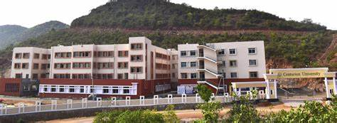
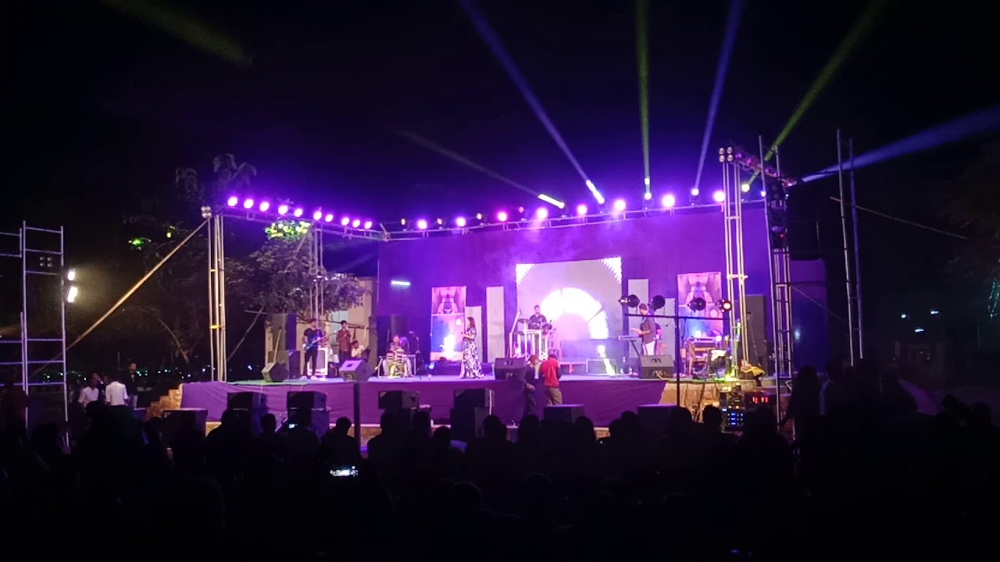
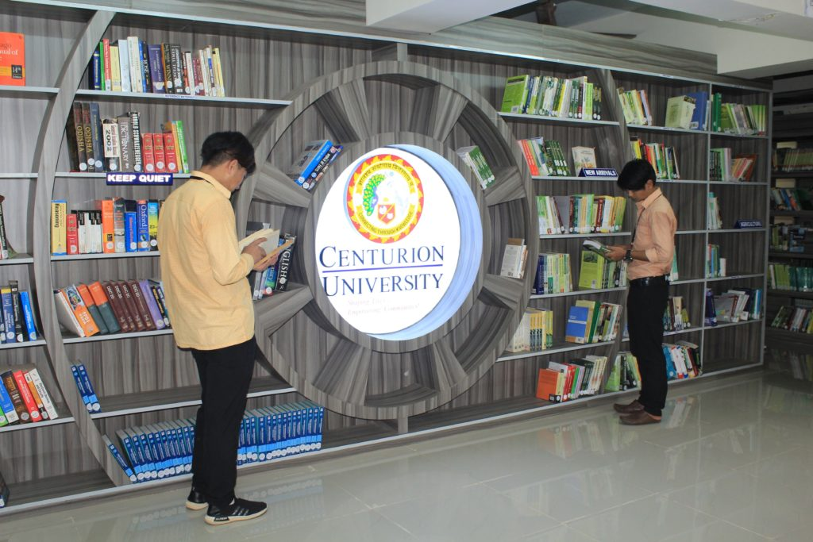
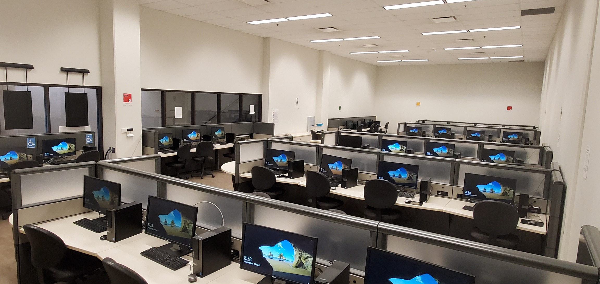
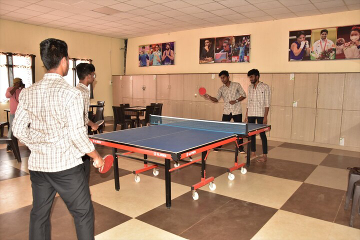

Centurion University is duly recognized as a pioneer is ‘Skill Integrated Higher Education”. Its unique model lays specific emphasis on creating sustainable livelihoods on a national scale in challenging geographies through education that results in employability and sparks entrepreneurship. This model has been recognized by multiple Governments (Central and State), International Organizations such as UNESCO and the World Bank as well as Policy Think-tanks such as the Niti Ayog. Recently, Centurion University’s School of Vocational Education and Training has been recognized as a Center of Excellence by Ministry of Skill Development and Entrepreneurship, Government of India. It is the only University in India to be recognized as such. We have continually strived to be a best in class human resource development hub that builds employable, enterprising and society centric youth through industry relevant education, skill development, new ventures, production, and technology development. The founders, faculty and staff are fully committed to its credo: Shaping Lives. Empowering Communities. This credo is underpinned by a value system of Inclusivity, Integrity, Equity, Respect and Sustainability in everything we do. Since its inception in 2005 and subsequent establishment as a University in 2010 (vide Odisha Act 4 of 2010), Centurion has created a unique environment that ensures a tailored learning and employability path for youth in some of the poorest and underserved geographies in Odisha and Andhra Pradesh. Centurion has embraced the Agenda for Sustainable Development and the associated Sustainable Development Goals (SDGs) since being formally announced in 2015. SDGs have been both formally and informally used as a guiding framework and are now firmly embedded in the Centurion DNA. Whilst having an indirect impact and contribution on almost all 17 SDGs, Centurion has specifically focused on 9 SDGs and embedded it in everything from its strategy, governance, institutional management and outcomes.
Our Approach to Education and TrainingCenturion has focused on ‘hands-on’, ‘experience based’, ‘practice oriented’ learning that creates transformative impact through community centric innovation and action research. While promoting Nano, Mini and Micro Enterprises, the University works toward learning experiences that are ‘quantifiable’, ‘sustainable’, ‘scalable’ and ‘replicable’. Centurion University has both built and participated in building eco-systems that include and integrate the community around it’s campuses and beyond, industry, entrepreneurs and other education institutions. Its education and training delivery approach is:
University has five campuses and a number of social entrepreneurial outreach entities that, along with collaborating institutions and networks, form its ecosystem. The campuses are located at Paralakhemundi, Bhubaneswar, Rayagada, Bolangir and Balasore. Its courses are delivered through the following schools:
Centurion University has established dedicated centers for research and training. Each of these centers focuses on building and improving specific areas ranging from curriculum design, product development and designing multi-disciplinary courses. Each of the centers is anchored by a senior faculty who acts as a coordinator and has faculty and leading industry leaders as participants. Some of the centers also deliver skill training and other related services besides undertaking research.
University has formally established 20+ applied research and product development centers. These centers are necessary multidisciplinary and cover a myriad of topics ranging from sustainability, AI/ML and Bio-engineering. Some of these centers are also engaged in product development including power train for e-Vehicle and a low cost insulin pump specifically for a developing country like India.
Gram Tarang Technologies Pvt. Ltd. (GT Tech) is a technological firm incubated within Centurion University of Technology and Management. It is a private limited company incorporated on 13 August 2018 and based in the states of Andhra Pradesh and Odisha. It works on Technological and Innovative Digital Products and solution under different verticals, namely, agriculture, mining and architecture engineering construction (AEC) for government, private sectors and educational institutes. GT Tech attempts to respond to the business challenges of the customers and provides innovative products and solutions. It works closely with young talent of educational institutions and experts from different fields to develop affordable intellectual products and unique value propositions for its customers and community and manages Centre of Excellence’s for skilling of students. It strives to deliver the best of the technology solutions to the industries and help them stay at par with the rest of the world. With the 4th industrial revolution, GT Tech tries to digitize organizations with the governing technologies like augmented reality, robotics, 3-D printing, automation, and artificial intelligence. GT Tech provides solution support for niche technologies using open source and licensed software. It partners with Dassault Systemes India, Aarav Unmanned Systems-Bangalore, Advance Mechanical Services P Ltd (AMS) – Bangalore and other organizations to work collaboratively in engineering services and solution implementation. GT Tech partners with reputed automotive equipment manufacturers and product development firms to deliver development and manufacturing solutions. It provides design and development services in railway locomotives, rail dynamics and infrastructure. It supports design, optimization, validation, and certification for marine applications. GT Tech addresses dynamic market challenges of aerospace & defense industries. It helps the aviation industry to sustain against competition regarding fuel efficiency, production rate and quality, environmental emission and noise, maintenance. GT Tech has the expertise to understand the needs of the world and believes in sustainable infrastructure for cities, commercial and residential and mega structures such as bridges and roads. GT Tech arranged high end virtual reality training for farmers on latest agricultural techniques to increase productivity. It also helped in vermicomposting through digital simulation on Dassault platform. Being supported by the government of Andhra Pradesh and Andhra Pradesh State Skill Development Corporation it reached nearly 10000 farmers in 50+ villages of 15+ districts. With a dedicated team of 130 engineers in mechanical, civil and software disciplines GT Tech has become a solution provider for all sectors of technology.
Centurion University




